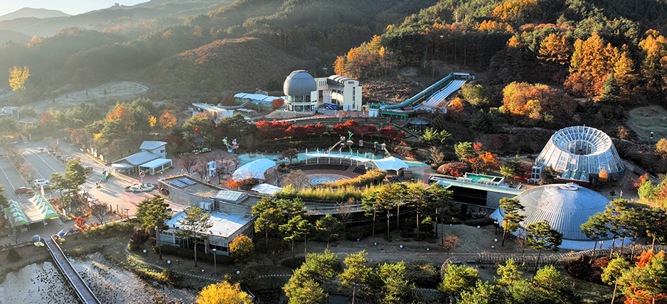
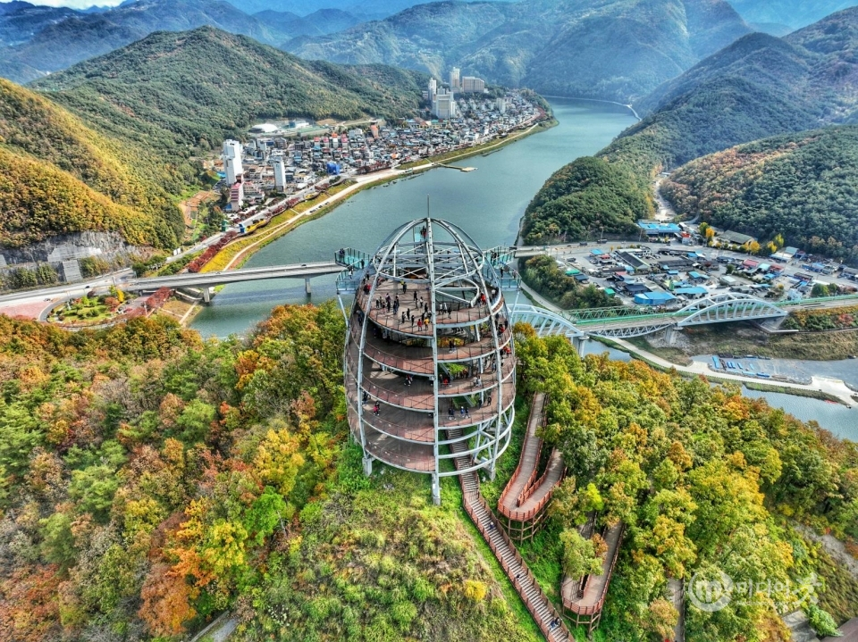

지역 소멸지역 여행지 추천
강원정선
가슴이 뻥 뚫리는 대자연과 짜릿한 액티비티를 동시에 즐길 수 있는 최고의 힐링 여행지입니다!
[놀거리] 절벽 끝 투명한 유리 바닥 위를 걷는 '병방치 스카이워크'에서 동강의 비경을 한눈에 담고, 아찔한 속도감을 즐기는 '짚와이어'와 철길 위를 달리는 '정선 레일바이크'로 스트레스를 날려보세요.
정선의 살아있는 역사를 만나는 '삼탄아트마인'과 매주 열리는 활기찬 '정선 5일장'도 놓칠 수 없는 필수 코스입니다.
[특산물] 정선 하면 빼놓을 수 없는 구수한 '곤드레나물'로 만든 밥과 향긋한 '황기', 그리고 쫄깃한 '수리취떡'과 부드러운 '메밀전병'까지 입안 가득 건강한 로컬의 맛을 느껴보세요!

전북 무주
사계절 내내 다채로운 매력이 펼쳐지는 청정 자연의 중심, 힐링과 모험의 천국 무주입니다!
[놀거리] 여름에는 보기만 해도 시원해지는 '무주구천동 계곡'에서 발을 담그고, 가을에는 붉게 물든 '적상산'의 단풍을 관람할 수 있습니다.
겨울이 되면 짜릿한 '무주덕유산리조트'에서 스키와 보드를 즐기거나, 곤돌라를 타고 편하게 '덕유산 향적봉'에 올라 환상적인 눈꽃 상고대를 감상할 수 있습니다.
밤에는 '반디랜드'에서 밤하늘을 수놓는 반딧불이와 별을 보는 낭만도 즐겨보세요.
[특산물] 고산지대에서 자라 당도가 높고 아삭한 '무주 사과'와 깊은 풍미를 자랑하는 '머루와인', 그리고 몸에 좋은 '천마'가 가장 유명합니다. 여행 후 시원한 머루와인 한 잔으로 하루의 피로를 풀어보세요!

충북 단양
인생샷 명소 가득! 남한강의 아름다운 물줄기를 따라 낭만과 스릴을 만끽하는 대한민국 대표 관광도시 단양입니다!
[놀거리] 하늘을 나는 짜릿한 경험을 할 수 있는 '패러글라이딩'의 성지이며, 기암괴석 위를 아슬아슬하게 걷는 '단양강 잔도길'과 남한강이 훤히 내려다보이는 '만천하스카이워크'에서 심장이 쫄깃해지는 재미를 느낄 수 있습니다.
고즈넉한 '도담삼봉'에서 유람선을 타거나, 신비로운 지하 세계가 펼쳐지는 '고수동굴'은 가족, 연인과 함께 오기 딱 좋습니다.
[특산물] 단양의 자랑인 알싸하고 깊은 맛의 '육쪽마늘'로 만든 마늘 떡갈비와 마늘 순대는 무조건 먹어봐야 하는 필수 별미입니다!
여기에 달콤하고 아삭한 '단양 아로니아'와 시원한 소백산 막걸리를 곁들이면 최고의 여행이 완성됩니다.